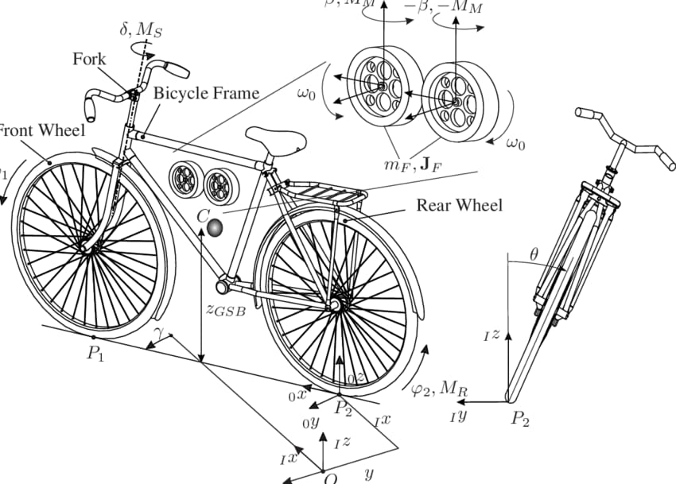

This project presents an innovative smart vehicle capable of maintaining its balance autonomously and navigating without human input. Engineered with a dual-wheel vertical design and a central horizontal stabilizing wheel, the vehicle achieves dynamic self-balancing using real-time sensor feedback (IMU/MPU6050). The self-driving functionality is powered by intelligent algorithms that allow the vehicle to detect obstacles, plan paths, and make navigation decisions without external control. The system is built using a microcontroller platform (such as Arduino or ESP32) and may integrate components like motor drivers, ultrasonic sensors, and gyroscopes. By combining mechanical stability, autonomous navigation, and real-time processing, this project demonstrates the future of intelligent mobility — one that requires no hands, no steering, and no compromise on control.
This project is a self-balancing and self-driving smart vehicle designed specifically to empower individuals with physical disabilities. By eliminating the need for manual control or balance, the vehicle offers safe, stable, and independent mobility to those who may struggle with conventional transportation methods. With its intelligent self-balancing mechanism and autonomous navigation system, the vehicle ensures smooth travel on various terrains — all without the need for hands or assistance. It’s not just a machine; it’s a step toward inclusive innovation, aiming to restore independence and dignity through engineering.
Self-Balancing Mechanism
Autonomous Driving
Designed for the Differently-Abled
Smart Sensor Integration
Energy Efficient
